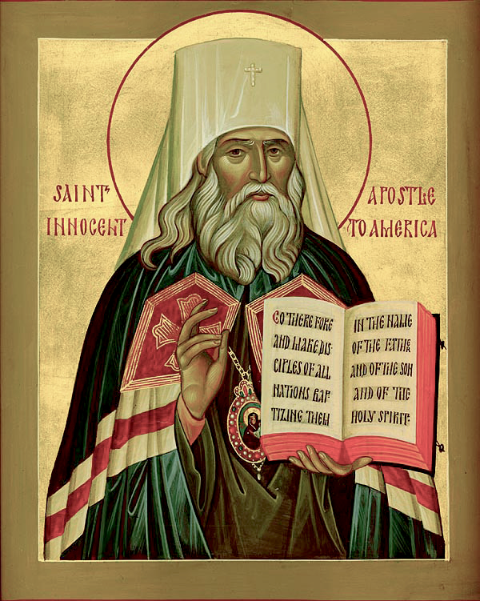

Текст акафиста утвержден на заседании Священного Синода 25 августа 2022 года (журнал № 78).
Избра́нный святи́телю и до́брый па́стырю Христо́ва ста́да, всю твою́ ду́шу и се́рдце, ум и кре́пость на служе́ние Го́споду преда́вый, в да́льних преде́лех неуста́нно труди́выйся, не земна́го ра́ди воздая́ния, но Святы́я ра́ди Це́ркве и спасе́ния всех. Мы же, твоего́ вели́каго духо́внаго сокро́вища насле́дницы, прино́сим ти хвале́бную пе́снь. Ты бо, предстоя́ Престо́лу Го́спода Сла́вы, хода́тайствуеши о земли́ на́шей и лю́дех ея́. Сего́ ра́ди, совокупле́ни во Еди́ней Святе́й Правосла́вней Це́ркви, благода́рственне воспева́ем ти: Ра́дуйся, святи́телю Моско́вский Инноке́нтие, Сиби́ри и Аме́рики просвети́телю!
А́нгелом подража́тель нра́вы твои́ми бы́л еси, свя́те Инноке́нтие, и мирови просия́л еси́ яко но́вый апо́стол, от ма́лыя ве́си Сиби́рския да́же до земли́ Америка́нския проше́дый, измла́да бо избра́ тя Госпо́дь, да просвети́ши све́том Правосла́вия те́мныя язы́ки Аля́ски, Сиби́ри и Камча́тки, и́же вку́пе с на́ми чтут тя пе́сненными похвалы́ сицевы́ми:
Ра́дуйся, пропове́дати Ева́нгелие возжеле́вый; ра́дуйся, благовести́ти наро́дом те́мным возревнова́вый.
Ра́дуйся, Милосе́рдному Искупи́телю челове́ков подража́вый; ра́дуйся, неве́дущим Бо́га ми́лость источа́вый.
Ра́дуйся, смире́нный де́лателю жа́твы Христо́вы; ра́дуйся, до́брый вертогра́дарю са́да Иису́сова.
Ра́дуйся, апо́столов Христовых истинный после́дователю; ра́дуйся, благове́стниче язы́ком Се́вера и Приаму́рия.
Ра́дуйся, наста́вниче и учи́телю алеу́тов и ко́лошей; ра́дуйся, свети́льниче пресве́тлый эскимо́сом и коря́ком.
Ра́дуйся, прови́дче пресла́вных дел Бо́жиих; ра́дуйся, зда́телю Правосла́вныя Це́ркви во Аме́рице.
Ра́дуйся, святи́телю Моско́вский Инноке́нтие, Сиби́ри и Аме́рики просвети́телю!
Ви́дя ра́зум твой и мно́гия да́ры, Бо́гом тебе́ да́нныя, наипа́че же ра́дость твою́ ве́лию во служе́нии Бо́гу и Це́ркви Святе́й Его́, благочести́вый сро́дник тво́й наставля́ше тя в ве́ре и благоче́стии, да от ма́лых лет воспое́ши Бо́гу: Аллилу́иа.
Ра́зум духо́вный от ю́ности твоея́ Бо́гом ти дарова́ся, во е́же служи́ти Ему́ во вся дни живота́ твоего́. Сего́ ра́ди во уче́нии Христо́ве непреста́нно поуча́лся еси́ и в сан свяще́нный поста́влен был еси́, да па́ству твою́ до́бре во благоче́стии наста́виши. Мы же, дивя́щеся свя́тости жития́ твоего́, пра́зднуем с весе́лием па́мять твою́, зову́ще ти си́це:
Ра́дуйся, наста́вники прему́дростию удиви́вый; ра́дуйся, во вся́цем уче́нии и де́лании преуспе́яние яви́вый.
Ра́дуйся, ра́бе усе́рдный, тала́нта Боже́ственнаго не сокры́вый; ра́дуйся, подви́жниче, его́же стопы́ от Боѓа исправля́ются.
Ра́дуйся, смире́ние и кро́тость возлюби́вый; ра́дуйся, ко хвале́нию Бо́га духо́вных чад твои́х подви́гнувый.
Ра́дуйся, Ева́нгелие велегла́сно пропове́давый; ра́дуйся, Пресвяту́ю Тро́ицу благоче́стно просла́вивый.
Ра́дуйся, по́двиги твои́ми ду́ши бли́жних твои́х возвесели́вый; ра́дуйся, вели́кими труды́ твои́ми лени́выя обличи́вый.
Ра́дуйся, вся тала́нты твоя́ на служе́ние Вы́шнему употреби́вый; ра́дуйся, и нас на служе́ние Бо́гу и бли́жнему подвиза́яй.
Ра́дуйся, святи́телю Моско́вский Инноке́нтие, Сиби́ри и Аме́рики просвети́телю!
Си́ла Вы́шняго укрепи́ тя к восприя́тию Боже́ственнаго призва́ния на служе́ние апо́стольское на Аля́сце. Те́мже в путьше́ствие вельми́ да́льнее и тру́дное ко Аме́рице Ру́сстей му́жественно устреми́лся еси́ ку́пно с супру́жницею, ма́терию-ста́рицею и младе́нцем ча́дом, Бо́гу же из глубины́ се́рдца твоего́ воспева́л еси́: Аллилу́иа.
Име́яше вои́стину ве́лия благода́ть тебе́ да́тися, о́тче Инноке́нтие, во е́же сотвори́ти дела́, челове́ческия си́лы превосходя́щая. Стра́нствие бо до́лгое и притру́дное соверши́л еси́, места́ ди́вия и мо́ре многомяте́жное преше́л еси́, и вся препя́тия превозмо́гл еси́, благове́стия ра́ди Христо́ва. Те́мже и мы, по́двиги твои́ми вдохновля́еми, вопие́м ти си́це:
Ра́дуйся, Сиби́ри и Аме́рики апо́столе; ра́дуйся, земе́ль да́льних восто́чных и за́падных святи́телю.
Ра́дуйся, сто́лпе Правосла́вия непоколеби́мый; ра́дуйся, пропове́дниче ве́ры неустраши́мый.
Ра́дуйся, до́брый па́стырю, ду́шу за о́вцы полага́яй; ра́дуйся, моли́твенниче, дерзнове́нно о пасо́мых Бо́га умоля́яй.
Ра́дуйся, моря́ хла́дная без стра́ха покори́вый; ра́дуйся, ко́рмчим и морепла́вателем му́дрый наста́вник бы́вый.
Ра́дуйся, Ева́нгельским ловце́м челове́ков уподо́бивыйся. ра́дуйся, мра́за, ску́дости и трудо́в ве́лиих не убоя́выйся;
Ра́дуйся, А́нгелы Госпо́дними храни́мый; ра́дуйся, Ду́хом Святы́м руководи́мый.
Ра́дуйся, святи́телю Моско́вский Инноке́нтие, Сиби́ри и Аме́рики просвети́телю!
Бу́ри ве́тров морски́х и помышле́ний сумни́тельных не поколеба́ша тя, блаже́нне Инноке́нтие, егда́, А́нгелы посреде́ во́лн храни́мый, дости́гл еси́ безбе́дно ото́ка Унала́шки. Те́мже, приклони́в коле́на, воспе́л еси́ ку́пно со сро́дники твои́ми на бре́зе морсте́м А́нгельскую хвале́бную пе́снь Бо́гу: Аллилу́иа.
Слы́шаша, Богому́дре Инноке́нтие, бли́жнии и да́льнии вели́чие дел тво́их, яко, уподо́бився святы́м Кири́ллу и Мефо́дию, изобре́л еси́ письмена́ алеу́том и ины́м племено́м се́верным, во е́же сла́вити им Бо́га И́стиннаго свои́м си язы́ком. Те́мже труди́лся еси́ неуста́нно, прелага́я Писа́ние, чин слу́жбы Боже́ственныя и поуче́ния кни́жная на язы́ки тузе́мныя. Мы же, прославля́юще Бо́га, дарова́вшаго нам свети́льника такова́го, вопие́м ти с ра́достию:
Ра́дуйся, просвети́телю язы́ков, во тьме́ и се́ни сме́ртней седя́щих; ра́дуйся, благовести́телю Триеди́наго Бо́га во страна́х полу́нощных.
́Ра́дуйся, Це́рковь Христо́ву на ка́мени тве́рдом стро́ивый; ра́дуйся, се́мена блага́я на ни́ве благопло́дней му́дро се́явый.
Ра́дуйся, равноапо́стольным учи́телем слове́нским единонра́вный; ра́дуйся, святи́телем росси́йским единомы́сленный.
Ра́дуйся, незло́бивых алеу́тов Смире́нному се́рдцем вручи́вый; ра́дуйся, свире́пых ко́лошей Судии́ Пра́ведному покори́вый.
Ра́дуйся, неве́дущим И́стины Христо́вы учи́телю нело́жный; ра́дуйся, в неве́рии су́щим бога́тства ве́ры неисчерпа́емаго пода́телю.
Ра́дуйся, ма́лое ста́до Христо́во воеди́но собра́вый и умно́живый. ра́дуйся, шама́нов, волко́в хи́щных, к покая́нию приведы́й.
Ра́дуйся, святи́телю Моско́вский Инноке́нтие, Сиби́ри и Аме́рики просвети́телю!
Боготе́чная звезда́ яви́ся тебе́ свята́го Инноке́нтия Ирку́тскаго по́двиг. Ты же, све́ту тоя́ после́дуя, путьше́ствоваше непреста́нно в места́ да́льняя и непроходи́мая, на ладия́х у́тлых, на еле́нях и псах, от ве́си в весь, от ото́ка к ото́ку, заблу́ждшия о́вцы взыску́я, ве́ру пра́вую язы́ком возвеща́я, во и́мя Отца́ и Сы́на и Свята́го Ду́ха креща́я. Храм же во и́мя Вознесе́ния Госпо́дня со ча́ды твоими алеу́ты на ото́це Унала́сце воздви́гл еси, ве́рныя науча́я спаса́ющему тобо́ю Богу взыва́ти: Аллилу́иа.
Ви́девше лю́дие алеу́тстии по́двиги и труды́ твоя́, притека́ху к тебе́ яко к до́брому па́стырю, внима́юще вся́кому сло́ву, от уст твои́х исходя́щему. Ты же, ве́лие попече́ние о них име́я, ми́лость вся́кую сим явля́л еси: неду́ги врачева́л еси́, ско́рбныя утеша́л еси, учи́лища отроко́м устроя́л еси́, во е́же наставля́ти тех во И́стине, сего́ ра́ди слы́шиши от всех си́це:
Ра́дуйся, мре́жею слове́с язы́ки улови́вый; ра́дуйся, любо́вь Ева́нгельскую ча́дом твои́м яви́вый.
Ра́дуйся, хра́мы свои́ма рука́ма созида́вый; ра́дуйся, па́че же ду́ши пасо́мых возраща́вый.
Ра́дуйся, Го́споду Иису́су и апо́столу Па́влу в труде́х подража́вый; ра́дуйся, я́ко ну́ждам твои́м и бли́жних послужи́ша ру́це твои́.
Ра́дуйся, те́ктоне, Вели́каго Архите́ктона учениче́; ра́дуйся, Ева́нгельских ры́барей досто́йный прее́мниче.
Ра́дуйся, мно́гая де́лания ча́дом твоим изъясни́вый; ра́дуйся, зда́ти, кова́ти и пли́нфы де́лати лю́ди научи́вый.
Ра́дуйся, Су́щаго пре́жде век пропове́давый; ра́дуйся, земна́я позна́ния стяжа́вый, да Еди́ному Бо́гу послу́жиши.
Ра́дуйся, святи́телю Моско́вский Инноке́нтие, Сиби́ри и Аме́рики просвети́телю!
Пропове́дника ве́лия и Богоно́сна чтут тя, преблаже́нне Инноке́нтие, земля́ Сиби́рская, Камча́тка и Аме́рика, ты бо благовести́л еси Христа́ Бо́га язы́ком ма́лым, те́мным и некни́жным, хра́мы воздви́гл еси́, о́троки, му́жи и жены́ в Писа́нии Боже́ственнем наста́вил еси, письмена́ но́вая изобре́л еси и вся научи́л еси взыва́ти Богу: Аллилу́иа.
Возсия́л еси свет живо́тный лю́дем земли́ полу́нощныя, Христо́вым уче́нием ты́я просвеща́яй, святи́телю о́тче Инноке́нтие. Восхоте́л бо еси́ простре́ти апо́стольския труды́ твоя́ да́же до земли́ Нушега́кския, иде́же пре́жде не бе пропове́дника. Сего́ ра́ди наро́ди эскимо́сстии, узре́вше тя, я́ко А́нгела све́тла, спасе́ние благовести́ти гряду́ща, и я́ко па́стыря до́бра, ду́шу свою́ за о́вцы полага́юща, в реце́ Нушега́к а́ки в но́вем Иорда́не крести́шася, с ни́миже и мы воспева́ем ти си́це:
Ра́дуйся, святу́ю ве́ру насади́вый; ра́дуйся, пре́лесть и́дольскую искорени́вый.
Ра́дуйся, просвети́телю ве́лий племе́н се́верных; ра́дуйся, учи́телю во мра́це неве́дения су́щих.
Ра́дуйся, чистоты́ ве́ры правосла́вныя усе́рдный храни́телю; ра́дуйся, му́дрых и некни́жных Богодохнове́нный наста́вниче.
Ра́дуйся, Христа сла́вити все́ми язы́ки завеща́вый; ра́дуйся, е́ресь триязы́чную попра́вый.
Ра́дуйся, свети́льниче света Христо́ва; ра́дуйся, благове́стием поля́рную нощь озари́вый.
Ра́дуйся, сло́ва Бо́жия пра́вый толкова́телю; ра́дуйся, ми́ра Христо́ва всю́ду насади́телю.
Ра́дуйся, святи́телю Моско́вский Инноке́нтие, Сиби́ри и Аме́рики просвети́телю!
Хотя́ Всеблаги́й Госпо́дь ве́ру правосла́вную во страна́х полу́нощных утверди́ти, повеле́ ти во гра́де Но́вем Арха́нгельске на ото́це Си́тке по́двиги твоя́ продолжи́ти, иде́же лю́дие тлинги́тстии, го́рдии и непокори́вии, живя́ху. Сего ради апо́стольския труды́ твоя́ умно́жил еси, нра́вы, обы́чаи и язык люде́й сих ко́лошских познава́я, да возмо́жеши на сро́дном им наре́чии Сло́во Бо́жие благовествова́ти, да и ти́и не́когда от всея́ души́ возопию́т Христу́: Аллилуия.
Но́вое по́прище, ве́лие и тру́дное, благода́тию Бо́жией соверша́л еси, Самому́ Свято́му Ду́ху тебе́ споспешеству́ющу, ко́лоши бо, мо́ром лю́тым устраше́ннии и по́мощь правосла́вных люде́й ру́сских уразуме́вшии, нача́ша Сло́ву Бо́жию внима́ти, покая́ние приноси́ти и путь спасе́ния познава́ти. Мы же, ре́вности твоея́ о спасе́нии всех челове́ков дивя́щеся, возглаша́ем:
Ра́дуйся, просвети́телю инуи́тов и инде́йцев; ра́дуйся, благовести́телю тунгу́сом и яку́том.
Ра́дуйся, тала́нты свои́ми всех удиви́вый; ра́дуйся, Го́сподеви, а не челове́ком угожда́ти учи́вый.
Ра́дуйся, ду́ши, вку́пе же и телеса́ врачева́вый; ра́дуйся, му́дрый кни́жниче, вся поле́зная на служе́ние Бо́гу поста́вивый.
Ра́дуйся, муже́м кни́жным, купце́м и ловце́м поле́зная возвести́вый; ра́дуйся, моли́твами и иску́сством кораблецы́ мно́гажды от потопле́ния спасы́й.
Ра́дуйся, всех чту́щих тя во Христе́ утвержде́ние; ра́дуйся, наста́вниче до́брый ко спасе́нию.
Ра́дуйся, до после́дних дний на ни́ве Госпо́дней труди́выйся; ра́дуйся, и по сме́рти от па́ствы твоея́ любо́вию не отлучи́выйся.
Ра́дуйся, святи́телю Моско́вский Инноке́нтие, Сиби́ри и Аме́рики просвети́телю!
Стра́нствие ве́лие вкруг всея́ земли́ соверши́л еси́, да возвести́ши архипа́стырем Росси́йским о возлю́бленных духо́вных ча́дех твои́х, сло́ва Бо́жия а́лчущих, и умо́лиши посла́ти де́лателей на жа́тву Христо́ву, и преложе́ния Писа́ния Свяще́ннаго на язы́к алеу́тский напеча́тати возмо́жеши. Творца́ в преди́вных творе́ниих Его́ в путьше́ствии твое́м созерца́вый, дости́гл еси гра́да Свята́го Петра́ и благода́рственне воспе́л еси́ Бо́гу: Аллилу́иа.
Всего́ себе́ и чад твои́х Про́мыслу Ми́лостиваго Бо́га пре́дал еси́, весть о блаже́нней кончи́не супру́жницы твоея́ му́жественно восприе́м. Зва́ние же ко и́ночеству от святи́теля Филаре́та Моско́вскаго слы́ша, посети́ святы́ни Моско́вския и Ки́евския, Го́споду о вразумле́нии и дарова́нии ти благода́тныя по́мощи усе́рдно моля́ся. Те́мже чин А́нгельский и сан архиере́йский, благодаря́ Бога, восприя́л еси, и святи́тель Камча́тский, Кури́льский и Алеу́тский нарече́н был еси. Мы же, воспомина́юще сия́, дерза́ем вопи́ти к тебе сице:
Ра́дуйся, крест мона́шеский му́жески подъя́вый и Христу́ после́довавый; ра́дуйся, в сан святи́тельский благода́тию Бо́жиею возведе́нный.
Ра́дуйся, Иоанну Крести́телю в креще́нии людей поревнова́вый; ра́дуйся, Кири́ллу и Мефо́дию в труде́х апо́стольских ра́вный.
Ра́дуйся, Стефа́на Пе́рмскаго до́блестный собра́те; ра́дуйся, Три́фона Пе́ченгскаго духо́вный насле́дниче.
Ра́дуйся, Ге́рмана Аля́скинскаго свяще́нный прее́мниче; ра́дуйся, Никола́я Япо́нскаго сла́вный наста́вниче.
Ра́дуйся, Инноке́нтия Ирку́тскаго и́стинный подража́телю; ра́дуйся, Филаре́та Моско́вскаго вели́кий после́дователю.
Ра́дуйся, венце́м терпе́ния на земли́ венча́нный;
Ра́дуйся, све́том вечным на Небеси́ осия́нный.
Ра́дуйся, святи́телю Моско́вский Инноке́нтие, Сиби́ри и Аме́рики просвети́телю!
Вси лю́дие земель Алеу́тских, Америка́нских и Камча́тских возра́довашася зело́, ви́дяще святи́теля но́ваго, с па́стырьми до́брыми к ним прибы́вшаго. Той же па́ки умно́жи попече́ния своя́ о устрое́нии и укрепле́нии Це́ркве Христо́вы. Повеле́ же учи́лище духо́вное на ото́це Си́тке учреди́ти, да вси, науче́ние кни́жное зде прие́млющии, Го́споду Сил взыва́ют: Аллилу́иа.
Вети́и многовеща́ннии не возмо́гут исчи́слити вся твоя путьше́ствия, труды́ и начина́ния во епа́рхии твое́й, я́же на ты́сящи по́прищ простира́шеся, и премно́гия язы́ки и племена́ в себе́ содержа́. А́нгели же Бо́жии и сподви́жницы твои́ ликовствова́ху, егда́ па́ки посла́л еси па́стыри и пропове́дники на Аля́ску и во вся да́льняя ме́ста Сиби́ри Восто́чныя, да вси язы́цы позна́ют ве́ру и́стинную. Сего́ ра́ди вопие́м ти си́це:
Ра́дуйся, апо́столе и́стинный кра́я аркти́ческаго; ра́дуйся, пе́рвый иера́рше во Аме́рице.
Ра́дуйся, Про́мыслом Бо́жиим на святи́тельство призва́нный; ра́дуйся, святи́телем Моско́вским Филаре́том укрепля́емый.
Ра́дуйся, и́стинный о́бразе архипа́стыря правосла́внаго; ра́дуйся, не дре́вле, но ны́не подвиза́выйся.
Ра́дуйся, верши́но, о́блаки заблужде́ний превосходя́щая; ра́дуйся, приста́нище, от козней злых духо́в укрыва́ющее.
Ра́дуйся, иноплеме́нных во́ев не убоявыйся; ра́дуйся, злобу тех му́дростию на кро́тость преложи́вый.
Ра́дуйся, яко апо́столи, язы́ки иноро́дными веща́вый; ра́дуйся, ле́ствицу восхожде́ния в Ца́рство Небе́сное нам указа́вый.
Ра́дуйся, святи́телю Моско́вский Инноке́нтие, Сиби́ри и Аме́рики просвети́телю!
Спасти́ хотя́ всех Жизнода́вец Госпо́дь, благоволи́ зе́мли Яку́тския и Аму́рския попече́нию твоему́, святи́телю о́тче Инноке́нтие, вве́рити. Зде же труды́ твои́ми но́вии хра́ми возведо́шася, учи́лища откры́шася, Писа́ние Боже́ственное на язык яку́тский преложе́но бе. Ты же сам, Бо́гом води́мый и А́нгелы укрепля́емый, посеща́ше лю́ди язы́к непросвеще́нных, бесе́ды, нра́вы и обы́чаи тех изуча́я, о́браз ве́ры и благоче́стия сим явля́я, науча́я непреста́нно взыва́ти Богу: Аллилу́иа.
Стена́ еси всем, о правосла́вней ве́ре ревну́ющим и к заступле́нию твоему́ с наде́ждею притека́ющим, свя́тче Божий Инноке́нтие. Ты бо о́браз в себе́ саме́м яви́л еси и словесы́ мно́гими поуча́л еси, ка́ко подоба́ет труди́тися ра́ди просвеще́ния не ве́дущих И́стины Христо́вы. Моли́твами же и хода́тайствы твои́ми вели́кий край Примо́рский и Уссури́йский ко Оте́честву на́шему мирно приложи́ся. Сего ради, воспомина́юще по́двиги и труды́ твоя́, взыва́ем ти та́ко:
Ра́дуйся, доброде́тельми, я́ко виссо́ном, украше́нный; ра́дуйся, прему́дростию Соломо́ну подо́бный.
Ра́дуйся, яко апо́стол Иоа́нн Богосло́в, Господа возлюби́вый; ра́дуйся, сему́ же и ма́лая ча́да твоя учи́вый.
Ра́дуйся, Ева́нгелие на язы́ки тузе́мныя преложи́вый; ра́дуйся, учи́лища И́стины Боже́ственныя основа́вый.
Ра́дуйся, се́мена Сло́ва Бо́жия в земли́ Америка́нстей насе́явый; ра́дуйся, трубо́ сладкогла́сная Ева́нгельскаго благове́стия.
Ра́дуйся, ни́щим и убо́гим благотвори́телю; ра́дуйся, о лю́дех ру́сских непреста́нный моли́твенниче.
Ра́дуйся, гра́да Благове́щенска духо́вный основа́телю; ра́дуйся, о благоде́нствии Оте́чества хода́таю
Ра́дуйся, святи́телю Моско́вский Инноке́нтие, Сиби́ри и Аме́рики просвети́телю!
Пе́ние Всемогу́щему Бо́гу па́че ины́х прине́сл еси́, свя́те Инноке́нтие, житие́ твое просвеще́нию неве́рных посвяти́вый, свет Ева́нгельский да́же до коне́ц земли́ донесы́й, стопы́ свои́ми всю вселе́нную преше́дый. При конце́ же жития́ твоего́ призва́н был еси на служе́ние святи́тельское во град первопресто́льный Москву́, о сем же со стра́хом и смире́нием Бо́гу воспе́л еси́: Аллилу́иа.
Светоза́рнаго свети́льника обре́те в тебе́, святи́телю Инноке́нтие, земля́ Ру́сская, уподо́бився бо вселе́нским учи́телем, па́ству Росси́йскую до́бре упа́сл еси, не забыв и духо́вная ча́да твоя́ Аля́скинская, поревнова́в о них да́же до дне успе́ния твоего́. Мы же с ни́ми согла́сно вопие́м ти такова́я:
Ра́дуйся, све́т ми́ру и соль земли́ яви́выйся; ра́дуйся, свети́льниче, во тьме́ заблу́ждшим сия́яй.
Ра́дуйся, покая́нныя моли́твы наша ко Влады́це принося́й; ра́дуйся, и сам о нас к Нему́ вы́ну моля́ся.
Ра́дуйся, све́тлое Правосла́вия пропове́дание; ра́дуйся, златоза́рное света Ева́нгельскаго сия́ние.
Ра́дуйся, ве́лий во Ца́рствии Бо́жии нарече́нный; ра́дуйся, на земли в Церкви Господней прославленный.
Ра́дуйся, и́стинныя ве́ры испове́дниче; ра́дуйся, Ца́рствия Бо́жия насле́дниче.
Ра́дуйся, язы́ком те́мным две́ри Ца́рствия Небе́снаго отве́рзый; ра́дуйся, прему́дро стро́ити Це́рковь во Аме́рице завеща́вый.
Ра́дуйся, святи́телю Моско́вский Инноке́нтие, Сиби́ри и Аме́рики просвети́телю!
Благода́ть просвеще́ния, ми́ра и друг ко другу любве́ испроси́ нам, святи́телю Христо́в Инноке́нтие, Ева́нгелие Христо́во до конца́ жития́ своего́ благовествова́вый! Завеща́л бо еси не пла́кати, но па́че ра́доватися о преставле́нии твое́м, слове́с похва́льных над гро́бом твои́м не глаго́лати, то́кмо сла́ву Пр́омыслу Божию возда́ти. Отше́л же еси́ ми́рно в вы́шняя селе́ния, Христо́вы Тайны прия́в. Мы же, ра́дующеся таково́му смире́нию твоему́, вопие́м Бо́гу: Аллилу́иа.
Пою́ще труды́ твоя́ и по́двиги, та́кожде и ди́вное житие́ твое́ на земли́, прославля́ем тя, святи́телю Христо́в Инноке́нтие, в тебе́ бо Бог, в Тро́ице прославля́емый, ди́вно просла́вися. Те́мже смире́нно мо́лим тя: си́лу свы́ше во укрепле́ние Правосла́вия ниспосли́, на враги́ ви́димыя и неви́димыя побе́ду да́руй, да со все́ми язы́ки, тобо́ю ко Христу́ приведе́нными, ку́пно и мы воспева́ем ти похвалы́ сия́:
Ра́дуйся, помина́ющих тя помина́яй; ра́дуйся, нестрое́ния посреде́ чтущих тя исправля́яй.
Ра́дуйся, непоро́чности тезоимени́тый; ра́дуйся, моли́твы де́лателю неусы́пный.
Ра́дуйся, Правосла́вия тве́рдое огражде́ние; ра́дуйся, неве́рия и лжи изобличе́ние.
Ра́дуйся, Тро́ицу Святу́ю богому́дре испове́давый; ра́дуйся, Евхари́стию соверша́ти свои́м си язы́ком наро́ды научи́вый.
Ра́дуйся, реко́ духо́вная, стра́ждущую пусты́ню напоя́ющая; ра́дуйся, многоце́нный сосу́де Ду́ха Свята́го.
Ра́дуйся, Торжества́ Правосла́вия дальнозри́телю; ра́дуйся, о всем мире те́плый ко Го́споду моли́твенниче.
Ра́дуйся, святи́телю Моско́вский Инноке́нтие, Сиби́ри и Аме́рики просвети́телю!
О, преблагослове́нне отче Инноке́нтие, просвеще́ние всех Христа́ и́щущих, ны́нешнее ма́лое наше прие́мля приноше́ние, вся лю́ди правосла́вныя от находя́щих зол и бед свободи́, в ми́ре, любви́ и единомы́слии соблюди́, и в Ца́рствие Небе́сное предста́тельством твои́м приведи́ вся ны, да с тобо́ю воспева́ем: Аллилу́иа.
Этот конда́к читается трижды
А́нгелом подража́тель нра́вы твои́ми бы́л еси, свя́те Инноке́нтие, и мирови просия́л еси́ яко но́вый апо́стол, от ма́лыя ве́си Сиби́рския да́же до земли́ Америка́нския проше́дый, измла́да бо избра́ тя Госпо́дь, да просвети́ши све́том Правосла́вия те́мныя язы́ки Аля́ски, Сиби́ри и Камча́тки, и́же вку́пе с на́ми чтут тя пе́сненными похвалы́ сицевы́ми:
Ра́дуйся, пропове́дати Ева́нгелие возжеле́вый; ра́дуйся, благовести́ти наро́дом те́мным возревнова́вый.
Ра́дуйся, Милосе́рдному Искупи́телю челове́ков подража́вый; ра́дуйся, неве́дущим Бо́га ми́лость источа́вый.
Ра́дуйся, смире́нный де́лателю жа́твы Христо́вы; ра́дуйся, до́брый вертогра́дарю са́да Иису́сова.
Ра́дуйся, апо́столов Христовых истинный после́дователю; ра́дуйся, благове́стниче язы́ком Се́вера и Приаму́рия.
Ра́дуйся, наста́вниче и учи́телю алеу́тов и ко́лошей; ра́дуйся, свети́льниче пресве́тлый эскимо́сом и коря́ком.
Ра́дуйся, прови́дче пресла́вных дел Бо́жиих; ра́дуйся, зда́телю Правосла́вныя Це́ркви во Аме́рице.
Ра́дуйся, святи́телю Моско́вский Инноке́нтие, Сиби́ри и Аме́рики просвети́телю!
Избра́нный святи́телю и до́брый па́стырю Христо́ва ста́да, всю твою́ ду́шу и се́рдце, ум и кре́пость на служе́ние Го́споду преда́вый, в да́льних преде́лех неуста́нно труди́выйся, не земна́го ра́ди воздая́ния, но Святы́я ра́ди Це́ркве и спасе́ния всех. Мы же, твоего́ вели́каго духо́внаго сокро́вища насле́дницы, прино́сим ти хвале́бную пе́снь. Ты бо, предстоя́ Престо́лу Го́спода Сла́вы, хода́тайствуеши о земли́ на́шей и лю́дех ея́. Сего́ ра́ди, совокупле́ни во Еди́ней Святе́й Правосла́вней Це́ркви, благода́рственне воспева́ем ти: Ра́дуйся, святи́телю Моско́вский Инноке́нтие, Сиби́ри и Аме́рики просвети́телю!
О па́стырю до́брый и учи́телю прему́дрый, о́бразе благонра́вия всем, благоче́стно жи́ти хотя́щим, святи́телю отче наш Инноке́нтие! К тебе, яко чада ко отцу́, прибега́ем и мо́лимся, помина́я твою любо́вь к лю́дем: бу́ди щит несокруши́м Святе́й Це́ркви Правосла́вней и Оте́честву нашему, архиере́и благоле́пием святи́тельства и прему́дростию украси́, па́стырем в служе́нии ре́вность да́руй, мона́шествующия к подвиго́м до́браго тече́ния в послуша́нии утверди́, правосла́вным христиа́ном ве́ру святу́ю непоро́чну соблюсти́ умоли́, мир весь предста́тельством твои́м умири́.
Те́плый наш моли́твенниче, всеросси́йский свети́льниче, просвети́телю Сиби́ри и Аме́рики, осени́ го́рним благослове́нием нас, в ско́рбех сущих, и пода́ждь утеше́ние и избавле́ние от боле́зней душе́вных и теле́сных; испроси́ нам свы́ше дух кро́тости, целому́дрия, смиренному́дрия, терпе́ния и любве́, да про́чее вре́мя жития́ на́шего в ве́ре и покая́нии поживе́м и в жи́зни ве́чней благода́рне восхва́лим просла́вльшаго тя Го́спода, Отца́, и Сы́на, и Свята́го Ду́ха, Тро́ицу Единосу́щную и Неразде́льную, во ве́ки веко́в. Ами́нь.
☧